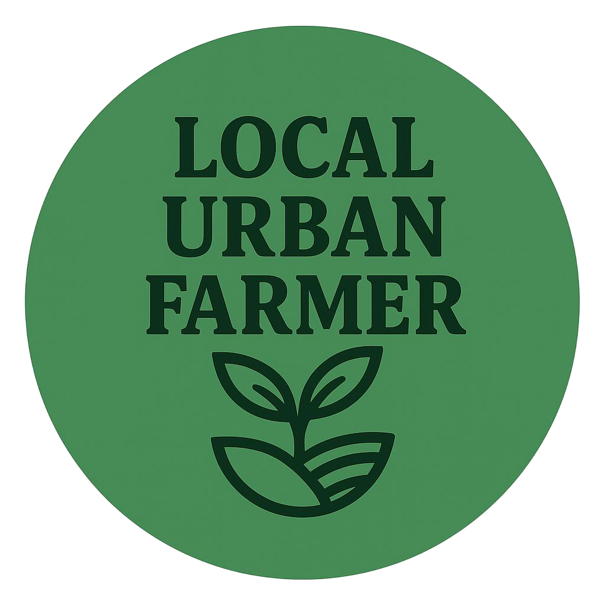

<!-- nav.html -->
<link href="https://cdn.jsdelivr.net/npm/bootstrap@5.3.2/dist/css/bootstrap.min.css" rel="stylesheet">

<nav class="navbar navbar-expand-lg navbar-light bg-light shadow-sm" aria-label="Main Navigation">
  <div class="container-fluid">
    <!-- Logo with alt text -->
    <a href="index.html" class="navbar-brand">
      
    </a>

    <!-- Mobile Menu Toggle Button -->
    <button 
      class="navbar-toggler" 
      type="button" 
      data-bs-toggle="collapse" 
      data-bs-target="#navbarNav" 
      aria-controls="navbarNav" 
      aria-expanded="false" 
      aria-label="Toggle navigation">
      <span class="navbar-toggler-icon"></span>
    </button>

    <!-- Navigation Links -->
    <div class="collapse navbar-collapse justify-content-end" id="navbarNav">
      <ul class="navbar-nav align-items-center">
        <li class="nav-item">
          <a class="nav-link active" href="index.html" aria-current="page">Home</a>
        </li>
        <li class="nav-item">
          <a class="nav-link" href="aboutus.html">About Us</a>
        </li>
        <li class="nav-item">
          <a class="nav-link" href="services.html">Services</a>
        </li>
        <li class="nav-item">
          <a class="nav-link" href="gallery.html">Gallery</a>
        </li>
        <li class="nav-item">
          <a class="nav-link" href="shop.html">Shop</a>
        </li>
        <li class="nav-item">
          <a class="nav-link" href="contactus.html">Contact Us</a>
        </li>
        <li class="nav-item">
          <a class="nav-link" href="blog.html">Blog</a>
        </li>
      <li class="nav-item dropdown">
        <a class="nav-link dropdown-toggle" href="blog.html" id="relatedPostsDropdown" role="button" data-bs-toggle="dropdown" aria-expanded="false">Related Posts</a>
        <ul class="dropdown-menu" aria-labelledby="relatedPostsDropdown">
          <li><a class="dropdown-item" href="blog-post-1.html">How to Start Urban Farming</a></li>
          <li><a class="dropdown-item" href="blog-post-2.html">Composting 101</a></li>
          <li><a class="dropdown-item" href="blog-post-3.html">Seasonal Planting Techniques</a></li>
          <li><a class="dropdown-item" href="blog-post-4.html">Growing Purple Hyacinth Bean Vine</a></li>
        </ul>
      </li>
        <li class="nav-item">
          <a href="advertising.html" class="btn btn-success ms-2">Collaborate</a>
        </li>
      </ul>
    </div>
  </div>
</nav>

<!-- Bootstrap Bundle JS (for dropdown functionality) -->
<script src="https://cdn.jsdelivr.net/npm/bootstrap@5.3.2/dist/js/bootstrap.bundle.min.js" integrity="sha384-kenU1KFdBIe4zVF0s0G1M5b4hcpxyD9F7jL+AMrE5E6EvoEH3sl0sibVcOQVnN4" crossorigin="anonymous"></script>

